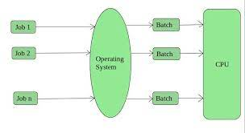

Operating System
An operating system is a system software which acts as an interface between the computer user and the hardware. The purpose of an operating system is to provide an environment in which the user can run the program & perform the task efficiently.
It is the software which performs all the basic tasks such as file management, memory management, process management, handling devices like printers, etc..
Diagramatic view of OS and Other software :

Evolution of Operating Systems:
-
1950s - 1960s: Batch Processing Systems
Early computers used batch processing systems. Programs were submitted in batches, and the computer executed them one after the other without user interaction.
-
1960s - 1970s: Multiprogramming Systems
Multiprogramming allowed multiple programs to be loaded into the computer's memory simultaneously. This led to improved resource utilization and increased efficiency.
-
1970s: Time-Sharing Systems
Time-sharing systems allowed multiple users to interact with the computer simultaneously. Users could run their programs and share resources, fostering a more interactive computing environment.
-
1970s - 1980s: Introduction of Microprocessors
The advent of microprocessors led to the development of personal computers (PCs). Operating systems like MS-DOS and Apple DOS were created for these early PCs.
-
1980s - 1990s: Graphical User Interfaces (GUI)
The introduction of GUIs (e.g., Windows, Mac OS) made computing more user-friendly. Users interacted with the system using graphical elements like icons and windows.
-
1990s - 2000s: Client-Server Computing
Networked computing became widespread, and client-server architectures became common. Operating systems like Linux and Windows NT were designed to support networking.
-
2000s - Present: Mobile Operating Systems
The rise of smartphones led to the development of mobile operating systems such as iOS, Android, and Windows Mobile. These OSes are designed for handheld devices and tablets.
-
Present: Cloud Computing and Virtualization
Operating systems have adapted to the era of cloud computing and virtualization. Cloud-based OSes, such as Chrome OS, emphasize online services and data storage.
Classification of Operating Systems:
- Single User vs. Multi-User:
-
Single User: Designed for a single user at a time (e.g., MS-DOS).
-
Multi-User: Supports multiple users simultaneously (e.g., Unix, Linux).
- Single Tasking vs. Multitasking:
-
Single Tasking: Can execute only one task at a time (e.g., MS-DOS).
-
Multitasking: Can execute multiple tasks concurrently (e.g., Windows, Linux).
- Single Programming vs. Multiprogramming:
-
Single Programming: Executes one program at a time.
-
Multiprogramming: Simultaneous execution of multiple programs.
- Batch Processing vs. Interactive Systems:
-
Batch Processing: Processes data in batches without user interaction.
-
Interactive Systems: Allows user interaction in real-time.
- Real-Time Systems:
-
Designed for time-sensitive applications, ensuring timely response to external events (e.g., embedded systems, control systems).
- Distributed Systems:
-
Manages resources across multiple interconnected computers (e.g., client-server architectures).
- Network Operating Systems:
-
Facilitates communication and resource sharing among computers in a network.
- Mobile Operating Systems:
-
Designed for mobile devices, such as smartphones and tablets (e.g., iOS, Android).
- Embedded Systems:
-
Operating systems embedded in devices like appliances, cars, and industrial machines.
- Cloud Operating Systems:
-
Designed for cloud computing environments, emphasizing scalability and virtualization.
Batch Os
A batch operating system is a type of operating system where tasks or jobs are grouped together and processed in sequences, known as batches, without requiring user interaction during execution. In this model, users submit jobs, typically defined using a Job Control Language (JCL), and a job scheduler manages their orderly execution. Batch systems prioritize efficiency and high throughput, optimizing resource utilization for tasks that do not demand immediate user interaction. Commonly associated with early mainframe computers, batch operating systems execute jobs sequentially, generating printed outputs like reports upon completion. While modern computing has shifted towards interactive and multitasking paradigms, batch processing concepts remain relevant for automating repetitive tasks and managing large-scale data processing in specific environments.
Network Os
A network operating system (NOS) is designed to facilitate communication and resource sharing among multiple computers within a network. It provides a set of protocols and services that allow connected devices to share files, printers, and other resources seamlessly. NOS enables centralized administration and management of network resources, ensuring efficient data transfer and coordination among connected systems. Examples of network operating systems include Novell NetWare, Microsoft Windows Server, and Linux-based systems configured for network functionalities. NOS plays a crucial role in creating a collaborative and interconnected computing environment, supporting tasks such as file sharing, user authentication, and network security.
Types of Network OS
- Peer-to-Peer Network Operating Systems:
In a peer-to-peer network, each computer can act as both a client and a server. There is no centralized server, and each user has control over their resources. Examples include Windows Peer-to-Peer Networking.
- Client-Server Network Operating Systems:
In client-server networks, a dedicated server manages network resources, and clients request services from the server. This centralized approach enhances control, security, and resource management. Examples include Microsoft Windows Server, Linux servers, and Novell NetWare.
Distributed Operating Systems:
Distributed operating systems extend across multiple machines, treating them as a single cohesive system. These systems aim to improve performance, reliability, and resource utilization. Examples include Amoeba, Plan 9 from Bell Labs, and Google's Borg.
Middleware Network Operating Systems:
Middleware provides a layer of software that enables communication and data management between distributed applications. It helps bridge the gap between different networked systems. Examples include IBM WebSphere and Microsoft .NET.
- Embedded Network Operating Systems:
Embedded operating systems are designed to run on network devices with limited resources, such as routers, switches, and other networking hardware. Examples include Cisco's IOS (Internetwork Operating System) and Juniper Junos.
- Mobile Network Operating Systems:
Mobile network operating systems are tailored for mobile devices and support features like wireless connectivity, power efficiency, and mobile-specific applications. Examples include iOS for Apple devices, Android for various smartphones, and Windows Mobile.
- Real-Time Network Operating Systems:
Real-time operating systems prioritize quick response times for critical tasks in applications like industrial control systems, telecommunications, and embedded systems. Examples include VxWorks and QNX.
- Cloud Network Operating Systems:
Cloud operating systems manage resources and services in cloud computing environments. They facilitate the deployment and scaling of applications on cloud infrastructure. Examples include Google Cloud's GKE (Google Kubernetes Engine) and Microsoft Azure.
Structure of OS
For efficient performance and implimentation an OS has been partitioned into central sub-system. These sub-systems has been arranged into different architectural configuration known as structure of OS.
Following are the different structure of OS :-
- Simple Structure
- Layered approach
- Macro Kernels
- Modules
- Simple Structure:
Simple structure in operating systems refers to a design approach that emphasizes minimalism and straightforward organization. It often involves a small and uncomplicated set of components, reducing complexity for ease of understanding and maintenance. Simple structure is beneficial for systems with specific, well-defined tasks and limited functionality.
- Layered Approach:
The layered approach is an architectural design strategy where the operating system is organized into distinct layers, each responsible for specific functions. Each layer provides services to the layer above it and utilizes services from the layer below. This modular structure enhances maintainability and flexibility, allowing for easier modification and replacement of individual layers without affecting the entire system.
- Macro Kernels:
Macro kernels represent a type of operating system architecture where a significant portion of the operating system services, including device drivers and file systems, are implemented in kernel space. This approach contrasts with microkernels, which aim to minimize the kernel's size by relegating many services to user space. Macro kernels provide efficient communication between components but may have a larger kernel size.
- Modules:
Modular design in operating systems involves breaking down the system into smaller, interchangeable components called modules. Each module performs a specific function, and these modules can be added, removed, or replaced independently. Modular design enhances system flexibility, ease of maintenance, and the ability to adapt to changing requirements. It is often associated with both layered approaches and macro kernels.
Functions of an Operating System
-
Process Management:
Handles processes, scheduling, and resource allocation to ensure efficient execution of tasks.
-
Memory Management:
Manages system memory, including allocation and deallocation of memory space for processes.
-
File System Management:
Organizes and controls access to files and directories, including storage and retrieval operations.
-
Device Management:
Manages hardware devices, including input/output operations and communication with peripherals.
-
User Interface:
Provides a user-friendly interface for interaction with the computer system, including command-line and graphical interfaces.
-
Security and Access Control:
Enforces security policies, controls access to resources, and protects the system from unauthorized access.
-
Network Management:
Facilitates network communication, including protocols, connection management, and data transfer.
-
Error Handling:
Detects and manages errors, ensuring the stability and reliability of the operating system and applications.
-
System Calls:
Provides an interface for applications to request services from the operating system, such as input/output or process creation.
-
Job Scheduling:
Schedules and prioritizes tasks to optimize system performance and resource utilization.
CPU or Process Scheduling Types
CPU or process scheduling is a fundamental function of an operating system, involving the allocation of CPU time to various processes. Scheduling can be categorized into primitive and non-primitive types:
-
Primitive Scheduling Types:
Primitive scheduling algorithms are basic and often serve as building blocks for more advanced techniques. Examples include:
- First-Come, First-Served (FCFS): Processes are executed in the order they arrive.
- Shortest Job Next (SJN) or Shortest Job First (SJF): The process with the shortest execution time is selected first.
-
Non-Primitive Scheduling Types:
Non-primitive scheduling algorithms are more complex and involve sophisticated strategies for improved efficiency. Examples include:
- Round Robin (RR): Processes are assigned fixed time slices, and the CPU switches between processes in a circular order.
- Priority Scheduling: Processes are assigned priority levels, and the one with the highest priority is executed first.
- Multilevel Queue Scheduling: Processes are divided into priority queues, each using a different scheduling algorithm.
- Multilevel Feedback Queue Scheduling: Processes move between queues dynamically based on their execution history and resource requirements.
Arrival Time (AT):
Definition: Arrival time is the point in time at which a process enters the ready queue and becomes available for execution.
Purpose: Arrival time is crucial for scheduling algorithms to determine the order in which processes should be executed.
Burst Time (BT):
Definition: Burst time, also known as execution time, is the amount of time a process requires to complete its execution once it starts.
Purpose: Burst time influences the overall duration a process occupies the CPU, affecting scheduling decisions.
Completion Time (CT):
Definition: Completion time is the total time taken by a process from arrival to its completion, including both waiting time and execution time.
Calculation: CT = Arrival Time + Turnaround Time
Purpose: Completion time provides insights into the total time a process spends in the system.
Waiting Time (WT):
Definition: Waiting time is the total time a process spends waiting in the ready queue before it gets CPU time for execution.
Calculation: WT = Turnaround Time - Burst Time
Purpose: Waiting time indicates the efficiency of a scheduling algorithm in utilizing CPU time.
Turnaround Time (TAT):
Definition: Turnaround time is the total time taken by a process to complete its execution from the moment it arrives in the ready queue.
Calculation: TAT = Completion Time - Arrival Time
Purpose: Turnaround time provides a comprehensive measure of the time a process spends in the system.
Key Considerations:
- Minimizing Waiting Time:
- Scheduling algorithms aim to minimize waiting time to enhance system efficiency and responsiveness.
- Optimizing Turnaround Time:
- Efficient scheduling aims to optimize turnaround time, ensuring timely completion of processes.
- Balancing Burst Time:
- Burst time influences the overall system performance, and scheduling decisions strive to balance it effectively.
- Scheduling Algorithms:
- Various algorithms, such as FCFS, SJF, Round Robin, and Priority Scheduling, make use of these metrics to determine the order of process execution.
First-Come, First-Served (FCFS) Scheduling:
Definition: FCFS is a simple process scheduling algorithm where the process that arrives first is the first to be executed.
Key Characteristics:
- Processes are executed in the order they arrive in the ready queue.
- It follows a non-preemptive approach, meaning once a process starts execution, it continues until completion.
- FCFS is easy to understand and implement.
Advantages:
- Simple and easy to implement.
- Suitable for a scenario where burst times are similar for all processes.
Disadvantages:
- May result in poor turnaround time, especially if processes with shorter burst times arrive later.
- Not optimal for minimizing waiting time or maximizing CPU utilization.
- Known as the "convoy effect" when a long process holds up shorter processes in the queue.
Example:
Consider three processes arriving in the order P1, P2, P3 with burst times 10, 5, and 8, respectively. The execution order and completion times would be:
| Process | Arrival Time | Burst Time | Completion Time |
|---------|--------------|------------|------------------|
| P1 | 0 | 10 | ... |
| P2 | 2 | 5 | ... |
| P3 | 4 | 8 | ... |
Considerations:
- FCFS is suitable for scenarios with minimal process dependencies and a relatively stable arrival pattern.
- For varying burst times, FCFS may not be the most optimal scheduling choice.
Shortest Job Next (SJF) Scheduling:
Definition: SJF is a process scheduling algorithm that selects the process with the shortest burst time to be executed next.
Key Characteristics:
- Processes are executed in order of their burst times, from shortest to longest.
- It can be preemptive or non-preemptive, with non-preemptive SJF being more common.
- SJF aims to minimize waiting time and improve overall system throughput.
Advantages:
- Minimizes waiting time by prioritizing short-duration jobs.
- Optimal for scenarios with a mix of short and long burst time processes.
Disadvantages:
- May result in starvation for long-duration processes if a continuous stream of short processes arrives.
- Requires knowledge of burst times in advance, which may not be feasible in some scenarios.
Example:
Consider three processes arriving with burst times 6, 3, and 8, respectively. The execution order and completion times would be:
| Process | Arrival Time | Burst Time | Completion Time |
|---------|--------------|------------|------------------|
| P1 | 0 | 6 | ... |
| P2 | 1 | 3 | ... |
| P3 | 2 | 8 | ... |
Considerations:
- SJF is effective for scenarios where burst times are reasonably predictable.
- Preemptive SJF is useful in dynamic environments where burst times may change during execution.
- Non-preemptive SJF may lead to the "convoy effect" if a long process arrives early in the queue.
Real time Operating System
- Hard Real Time OS
- Soft Real Time OS
- Firm Real Time OS
Hard Real-Time Operating System:
Definition: A hard real-time operating system guarantees that tasks will be executed within a strict, deterministic time frame. Failure to meet a deadline is considered a catastrophic system failure.
Characteristics:
- Strict timing requirements.
- Failure to meet a deadline is intolerable and may result in system failure.
- Used in critical applications such as medical devices, aerospace systems, and industrial control systems.
Soft Real-Time Operating System:
Definition: A soft real-time operating system aims to provide timely responses to tasks but allows some flexibility in meeting deadlines. Missing occasional deadlines may be tolerated without catastrophic consequences.
Characteristics:
- Timing constraints are less stringent compared to hard real-time systems.
- Occasional missed deadlines may be acceptable, but overall system performance should be optimized.
- Used in multimedia applications, virtual reality systems, and some control systems.
Firm Real-Time Operating System:
Definition: A firm real-time operating system falls between hard and soft real-time systems. Missing deadlines is generally tolerable, but the system still aims to provide timely responses to tasks to maintain overall system integrity.
Characteristics:
- Some flexibility in meeting deadlines.
- Occasional missed deadlines are tolerated, but their frequency is minimized.
- Used in automotive control systems, financial applications, and some industrial automation.
Context Switching
Definition: Context switching is the process of saving and restoring the state of a CPU (Central Processing Unit) so that a process can be resumed from the point it was previously interrupted.
Key Characteristics:
- Context switching allows a multitasking operating system to manage multiple processes efficiently.
- When a higher-priority process becomes ready to run or when a time slice for a process expires, the operating system saves the current context and loads the context of the new process.
- The context of a process includes the values of CPU registers, program counter, and other essential state information.
- Context switching involves overhead, including saving and restoring the context, which can impact system performance.
Purposes and Scenarios:
- Time Slicing: In time-sharing systems, the operating system performs context switching to allow each process to run for a specified time slice before switching to another process.
- Interrupt Handling: When an interrupt occurs (e.g., I/O completion, timer interrupt), the operating system performs context switching to handle the interrupt and resume the interrupted process.
- Process Scheduling: Context switching is crucial for managing the execution of multiple processes concurrently, allowing the operating system to maintain fairness and responsiveness.
Deadlocks
Definition: A deadlock is a situation in a computing system where two or more processes are unable to proceed because each is waiting for the other to release a resource.
Diagramatic View of Deadlock

Necessary Conditions for Deadlock:
- Mutual Exclusion: Resources cannot be shared; only one process can use a resource at a time.
- Hold and Wait: A process holds at least one resource and is waiting to acquire additional resources held by other processes.
- No Preemption: Resources cannot be forcibly taken from a process; they must be released voluntarily.
- Circular Wait: There exists a circular chain of two or more processes, each waiting for a resource held by the next process in the chain.
Deadlock Recovery
Definition: Deadlock recovery refers to the process of resolving a deadlock situation in a computing system. It involves techniques to identify deadlocks and take corrective actions to restore system functionality.
Strategies for Deadlock Recovery:
- Process Termination: One or more processes involved in the deadlock are terminated to break the circular wait condition. The released resources can then be allocated to waiting processes.
- Resource Preemption: Resources held by processes in the deadlock can be preempted (forcibly taken back) to resolve the deadlock. The preempted resources are then allocated to waiting processes.
- Process Rollback: Rollback involves reverting the state of one or more processes involved in the deadlock to a previously consistent state. This allows the processes to restart from a known point and continue execution.
- Combined Strategies: Hybrid approaches may combine process termination, resource preemption, and process rollback to achieve effective deadlock recovery based on system priorities and constraints.
Considerations:
- Deadlock recovery strategies should aim to minimize disruption to the overall system and maximize resource utilization.
- The choice of a specific recovery strategy depends on factors such as system priorities, resource dependencies, and the criticality of the affected processes.
- Efficient algorithms and heuristics are employed to detect deadlocks promptly and initiate appropriate recovery actions.
Limitations:
- Deadlock recovery introduces overhead and may impact system performance.
- Certain recovery strategies may result in the loss of work or progress made by terminated or rolled-back processes.
- Effective deadlock detection and recovery mechanisms are crucial for maintaining system stability and responsiveness.
Banker's Algorithm
Definition: The Banker's Algorithm is a resource allocation and deadlock avoidance algorithm used in operating systems. It is designed to prevent deadlocks by dynamically checking whether a requested resource allocation will leave the system in a safe state.
Key Concepts:
- Available: The vector representing the number of available resources of each type.
- Max: The matrix indicating the maximum demand of each process for each resource type.
- Allocation: The matrix indicating the number of resources of each type currently allocated to each process.
- Need: The matrix indicating the remaining resources needed by each process to complete its execution.
Banker's Algorithm Steps:
- Initialize the Available vector, Max matrix, Allocation matrix, and calculate the Need matrix.
- Process a request for resources by a specific process:
- If the request is less than or equal to the Need and the Available, grant the resources and update the matrices.
- If granting the request leads to a safe state, proceed; otherwise, deny the request.
- Release resources held by a process and update the matrices accordingly.
Safe State:
- A state is considered safe if there exists a sequence of processes such that each process can obtain its maximum resource needs and release resources before the next process begins.
Unsafe State:
- A state is considered unsafe if there is no sequence of processes that allows all processes to complete without causing a deadlock.
Considerations:
- The Banker's Algorithm ensures that resources are allocated in a way that prevents the system from entering an unsafe state and causing a deadlock.
- It allows processes to request and release resources dynamically while maintaining system safety.
- Banker's Algorithm is used in systems where the total resource requirement of all processes is known in advance.
Fragmentation
Definition: Fragmentation is a phenomenon in computer systems where memory space becomes inefficiently allocated or wasted, making it challenging to utilize available resources effectively.
Types of Fragmentation:
- Internal Fragmentation: Internal fragmentation occurs when allocated memory space within a partition is not fully utilized. It results from allocating a larger block than necessary, leading to wasted space.
- External Fragmentation: External fragmentation occurs when free memory blocks are scattered throughout the system, making it difficult to allocate contiguous space for a new process or data. It can lead to inefficient memory utilization.
Internal Fragmentation:
- Internal fragmentation is typically associated with fixed-size partitioning schemes where each partition has a predetermined size.
- It occurs when a process is allocated more memory space than it actually requires, leading to unused portions within the allocated block.
- Internal fragmentation can be reduced by using variable-size partitioning or dynamic memory allocation techniques.
External Fragmentation:
- External fragmentation is more common in dynamic memory allocation systems where memory blocks are assigned and released dynamically.
- It results from the accumulation of small free memory blocks scattered across the system, making it challenging to find contiguous space for new processes or data.
- Compaction, where memory is rearranged to form a larger contiguous block, is a technique used to address external fragmentation.